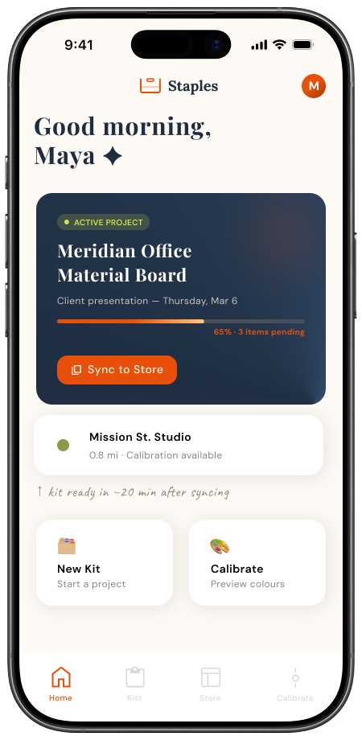
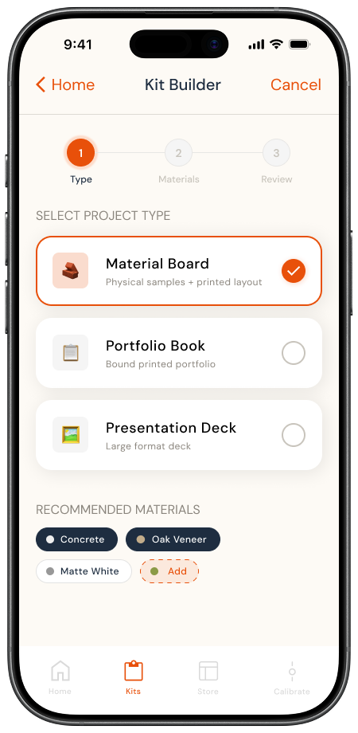
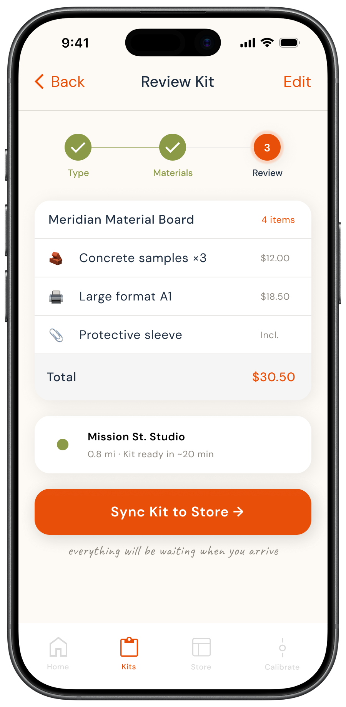
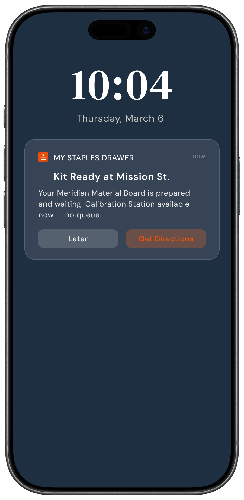
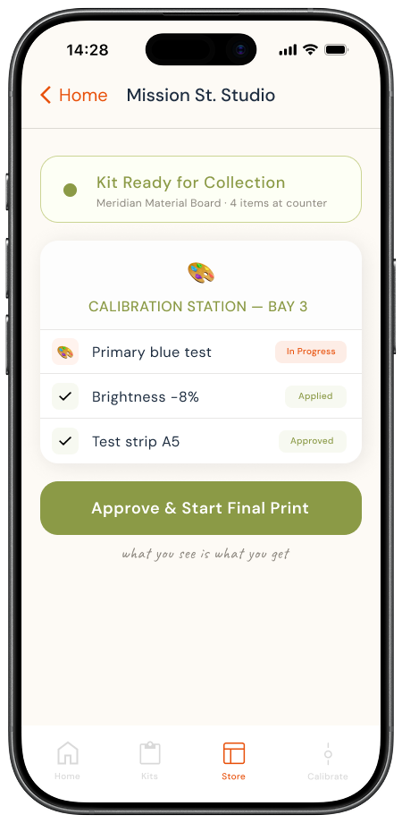
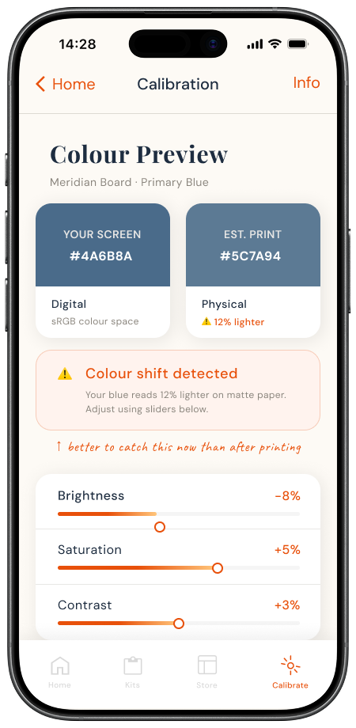
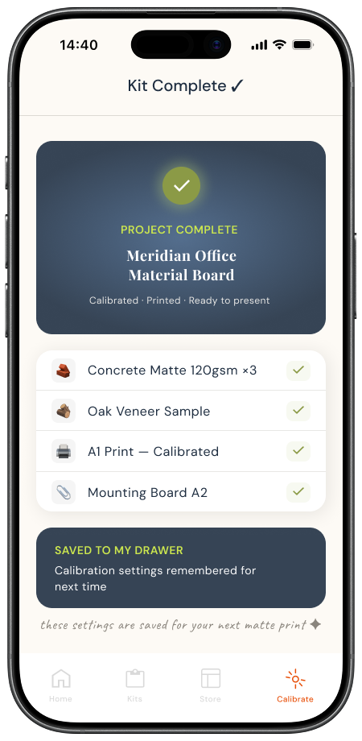

Digital
Digital
Bridge
Bridge
Physical
Physical
Physical







Dashboard
Active project.
Store nearby.
Build Kit
Smart defaults.
Built before you leave.
Sync to Store
One tap.
Studio is notified.
Ready Alert
Kit ready.
Leave home confident.
Arrive at Studio
Named welcome.
Kit waiting.
Calibration Station
Screen vs print,
side by side.
Confidence Confirmed
Calibrated.
Saved for next time.